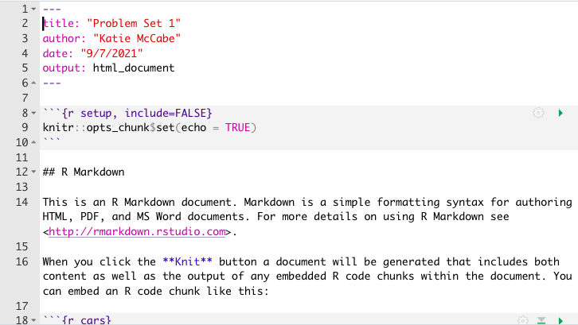
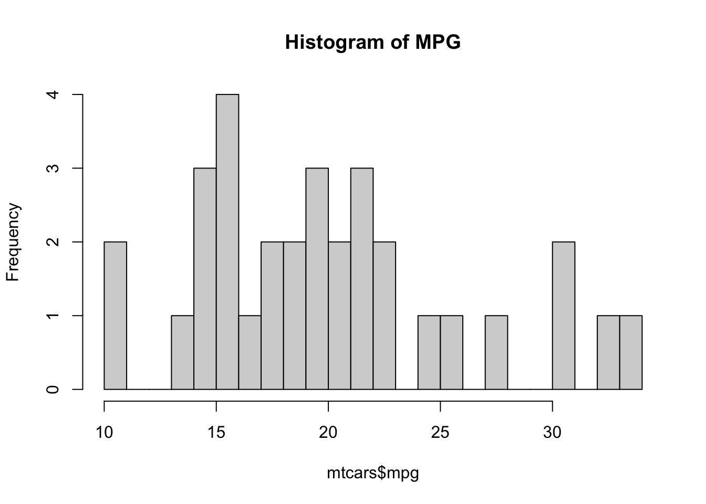

5 + 3[1] 85 - 3[1] 25^2[1] 255 * 3[1] 155/3[1] 1.666667(5 + 3) * 2[1] 16This course will primarily use R for analysis, though we will briefly discuss a few areas where Stata may be more efficient.
Learning to program in R is not a primary goal of this course, but in proceeding through the course, you will gain and/or get practice with a lot of R skills.
For those brand new to R, I strongly recommend you complete the following tutorials prior to or at the beginning of the course.
Goal
By the end of the first week of the course, you will want to have R and RStudio installed on your computer (both free) and feel comfortable using R as a calculator and loading datasets into R.
R and RStudio Installation
Supplemental Resources
To supplement the above resources, I would recommend playing around with one of the following:
Note: Much of the code used in the course will rely on “base R” functions (functions that already exist in R). People have also developed tidyverse packages that can be easily installed in R, which supplements base R tools with alternative functions and a syntax based on a particular design philosophy, grammar, and data structure that they find preferable to base R. Using base R vs. tidyverse is often just a matter of personal taste. Either is fine to use in this course, and you will get exposure to code that relies on both.
This is a lot of information to digest all at once. Don’t worry. No one remembers everything. Plan on going back to these resources often throughout the course and beyond. We will have office hours the first week of the course to help troubleshoot issues.
This next section provides a few notes on using R and RStudio now that you have installed it. This is mostly repetitive of the other resources. This includes only the bare essential information for opening an R script and digging into using R as a calculator. In this section, we cover the following materials:
<-setwd() function.
Note: The first time you open RStudio, you likely only have the three windows above. We will want to create a fourth window by opening an R script to create the fourth window.
Now you should have something that looks like this, similar to Figure 1.1. in QSS:

The bottom left window in your RStudio is the Console. You can type in this window to use R as a calculator or to try out commands. It will show the raw output of any commands you type. For example, we can try to use R as a calculator. Type the following in the Console (the bottom left window) and hit “enter” or “return” on your keyboard:
5 + 3[1] 85 - 3[1] 25^2[1] 255 * 3[1] 155/3[1] 1.666667(5 + 3) * 2[1] 16In the other RStudio windows, the upper right will show a history of commands that you have sent from the text editor to the R console, along with other items. The lower right will show graphs, help documents and other features. These will be useful later in the course.
Earlier, I asked you to open an R script in the upper left window by doing File, then New File, then R Script. Let’s go back to working in that window.
Set your working directory setwd()
(Almost) every time you work in RStudio, the first thing you will do is set your working directory. This is a designated folder in your computer where you will save your R scripts and datasets.
There are many ways to do this.
setwd() command which can also be used directly to set your working directory in the future.getwd() in your Console. Try it now## Example of where my directory was
getwd()If I want to change the working directory, I can go to the top toolbar of my computer and use Session \(\rightarrow\) Set Working Directory \(\rightarrow\) Choose Directory or just type my file pathway using the setwd() below:
## Example of setting the working directory using setwd().
## Your computer will have your own file path.
setwd("/Users/ktmccabe/Dropbox/Rutgers Teaching/")Saving the R Script
Let’s now save our R script to our working directory and give it an informative name. To do so, go to File, then Save As, make sure you are in the same folder on your computer as the folder you chose for your working directory.
Give the file an informative name, such as: “McCabeWeek1.R”. Note: all of your R scripts will have the .R extension.
Now that we have saved our R script, let’s work inside of it. Remember, we are in the top-left RStudio window now.
setwd()
5 + 3 is the right approach, I would type that into my script.The last thing we will note in this initial handout is how to execute commands in your R script.
To run / execute a command in your R script (the upper left window), you can
Try it: Type 5 + 3 in the R script. Then, try to execute 5 + 3. It should look something like this:

After you executed the code, you should see it pop out in your Console:
5 + 3[1] 8
Note: The symbol # also allows for annotation behind commands or on a separate line. Everything that follows # will be ignored by R. You can annotate your own code so that you and others can understand what each part of the code is designed to do.
## Example
sum53 <- 5 + 3 # example of assigning an addition calculationSometimes we will want to store our calculations as “objects” in R. We use <- to assign objects by placing it to the left of what we want to store. For example, let’s store the calculation 5 + 3 as an object named sum53:
sum53 <- 5 + 3After we execute this code, sum53 now stores the calculation. This means, that if we execute a line of code that just hassum53`, it will output 8. Try it:
sum53[1] 8Now we no longer have to type 5 + 3, we can just type sum53. For example, let’s say we wanted to subtract 2 from this calculation. We could do:
sum53 - 2[1] 6Let’s say we wanted to divide two stored calculations:
ten <- 5 + 5
two <- 1 + 1
ten / two[1] 5The information stored does not have to be numeric. For example, it can be a word, or what we would call a character string, in which case you need to use quotation marks.
mccabe <- "professor for this course"
mccabe[1] "professor for this course"Note: Object names cannot begin with numbers and no spacing is allowed. Avoid using special characters such as % and $, which have specific meanings in R. Finally, use concise and intuitive object names.}
practice.calc <- 5 + 3meaningless.and.unnecessarily.long.name <- 5 + 3While these are simple examples, we will use objects all the time for more complicated things to store (e.g., like full datasets!) throughout the course.
We can also store an array or “vector” of information using c()
somenumbers <- c(3, 6, 8, 9)
somenumbers[1] 3 6 8 9Importance of Clean Code
Ideally, when you are done with your R script, you should be able to highlight the entire script and execute it without generating any error messages. This means your code is clean. Code with typos in it may generate a red error message in the Console upon execution. This can happen when there are typos or commands are misused.
For example, R is case sensitive. Let’s say we assigned our object like before:
sum53 <- 5 + 3However, when we went to execute sum53, we accidentally typed Sum53:
Sum53Error in eval(expr, envir, enclos): object 'Sum53' not foundOnly certain types of objects can be used in mathematical calculations. Let’s say we tried to divide mccabe by 2:
mccabe / 2Error in mccabe/2: non-numeric argument to binary operatorA big part of learning to use R will be learning how to troubleshoot and detect typos in your code that generate error messages.

Below is an exercise that will demonstrate you are able to use R as a calculator and create R scripts.
setwd()) at the top of your .R script.So you have some data…. AND it’s a mess!!!
A lot of the data we may encounter in courses has been simplified to allow students to focus on other concepts. We may have data that look like the following:
nicedata <- data.frame(gender = c("Male", "Female", "Female", "Male"),
age = c(16, 20, 66, 44),
voterturnout = c(1, 0, 1, 0)) gender age voterturnout
1 Male 16 1
2 Female 20 0
3 Female 66 1
4 Male 44 0In the real world, our data may hit us like a ton of bricks, like the below:
uglydata <- data.frame(VV160002 = c(2, NA, 1, 2),
VV1400068 = c(16, 20, 66, 44),
VV20000 = c(1, NA, 1, NA)) VV160002 VV1400068 VV20000
1 2 16 1
2 NA 20 NA
3 1 66 1
4 2 44 NAA lot of common datasets we use in the social sciences are messy, uninformative, sprawling, misshaped, and/or incomplete. What do I mean by this?
NA values in R, or perhaps a research firm has used some other notation for missing data, such as a 99.Below are a few tips and resources. Ultimately, research is a constant debugging process. Loving R means seeing red error messages. The nice thing about R is that a lot of researchers constantly post coding tips and questions online. Google ends up being your friend, but it’s entirely normal to have to devote several hours (days?) to cleaning data.

Hopefully, there is an easy fix for dealing with uninformative variable names. I say “hopefully” because hopefully when you encounter a dataset with uninformative variable names, the place where you downloaded the data will also include a codebook telling you what each variable name means, and how the corresponding values are coded.
Unfortunately, this may not always be the case. One thing you can do as a researcher is when you create a dataset for your own work, keep a record (in written form, on a word document or in a pdf or code file) of what each variable means (e.g., the survey question it corresponds to or the exact economic measure), as well as how the values of the variables are coded. This good practice will help you in the short-term, as you pause and come back to working on a project over the course of a year, as well as benefit other researchers in the long run after you publish your research.
For examples of large codebooks, you can view the 2016 American National Election Study Survey and click on a codebook.
I recommend that once you locate the definition of a variable of interest, rename the variable in your dataset to be informative. You can do this by creating a new variable or overwriting the name of the existing variable. You might also comment a note for yourself of what the values mean.
## Option 1: create new variable
## gender 2=Male, 1=Female
uglydata$gender <- uglydata$VV160002
## Option 2: Overwrite
names(uglydata)[1] <- "gender2"When we have a column with missing data, it is best to do a few things:
If we want to figure out how much missing data we have in a variable, we have a couple of approaches:
## Summarize this variable
summary(uglydata$gender) Min. 1st Qu. Median Mean 3rd Qu. Max. NA's
1.000 1.500 2.000 1.667 2.000 2.000 1 ## What is the length of the subset of the variable where the data are missing
length(uglydata$gender[is.na(uglydata$gender) == T])[1] 1If we choose to ignore missing data, this can often be easily accomplished in common operations. For example, when taking the mean we just add an argument na.rm = T:
mean(uglydata$VV1400068, na.rm=T)[1] 36.5If we do a regression using lm or glm, R will automatically “listwise” delete any observation that has missing data (NA) on any of the variables in our regression model.
We should always be careful with missing data to understand how R is treating it in a particular scenario.
For example if we were to run table(uglydata$gender), we would have no idea there were missing data unless we knew that the total number of observations nrow(uglydata) was greater than 3. The table() command is omitting the missing values by default.
table(gender= uglydata$gender)gender
1 2
1 2 Often times the ways that variables are coded in datasets we get off-the-shelf are not coded exactly as how we were dreaming up operationalizing our concepts. Instead, we are going to have to wrangle the data to get them into shape.
This may involve creating new variables that recode certain values, creating new variables that collapse some values into a smaller number of categories, combining multiple variables into a single variable (e.g., representing the average), or setting some of the variable values to be missing (NA). All of these scenarios may come up when you are dealing with real data.
Chapter 2 of Kosuke Imai’s book Quantitative Social Science walks through some examples of how to summarize your data, subset the data (2.2.3), create new variables using conditional statements (Section 2.2.4, e.g., “If age is below 65, assign the new variable a value of”0”, otherwise, assign it a value of “1”), and creating new factor variables (2.2.5, e.g., coding anyone who is Protestant, Catholic, or Lutheran in the data as “Christian”).
Here is a short video working through the example from 2.2.4 using conditional statements to construct new variables. It uses the resume dataframe, which can be loaded below.
resume <- read.csv("https://raw.githubusercontent.com/ktmccabe/teachingdata/main/resume.csv")R Studio has its own set of primers on various topics, including summarizing and working with data. See the Work with Data primer, as well as the full list of other topics. These will often rely on tidyverse coding.
Sometimes in order to answer our research questions, we need to combine data from multiple sources. If we have a large amount of data, this may be quite daunting. Fortunately, R has several commands that allow us to merge or append datasets.
Here is a video working through examples of merging and appending data based on the tutorial below.
Here are a few resources on merging and appending data:
merge command in R. See Explanation.
Some merging problems are extremely difficult. For example, some researchers need to merge large datasets–like the voter file– with other administrative records. However, how someone’s name is displayed in one dataset might not match at all with the other dataset. For these complex problems, we might need “fuzzy matching.” Here is an R package that helps with this more complex case and related paper.
Data can come in a variety of shapes and sizes. It’s a beautiful disaster.
Sometimes it’s particularly useful to have data in wide formats, where every row relates to a particular unit of data– such as a country or a survey respondent. And perhaps each column represents information about that unit at a particular point in time. For example, perhaps you have a column with information on that subject for the past five years.
countrywide <- data.frame(country = c("Canada", "USA"),
economy2016 = c(10, 12),
economy2017 = c(11, 11),
economy2018 = c(9, 5),
economy2019 = c(13, 8),
economy2020 = c(12, 6)) country economy2016 economy2017 economy2018 economy2019 economy2020
1 Canada 10 11 9 13 12
2 USA 12 11 5 8 6However, other times, it would be more useful to you, as you dig into your data analysis, to have this information arranged in “long” format, such that every row is now a unit-year combination. You have a row for Canada in 2020, a row for Canada in 2019, and so on. Countries are now represented in multiple rows of your data.
countrylong <- data.frame(country = rep(c("Canada", "USA"),5),
year = 2016:2020,
economy= c(10, 12,11, 11,9, 5,13, 8,12, 6)) country year economy
1 Canada 2016 10
2 USA 2017 12
3 Canada 2018 11
4 USA 2019 11
5 Canada 2020 9
6 USA 2016 5
7 Canada 2017 13
8 USA 2018 8
9 Canada 2019 12
10 USA 2020 6Ultimately, different shapes of data are advantageous for different research questions. This means it is best if we have a way to (at least somewhat) easily shift between the two formats.
Here is a resource on how to “reshape” your data between wide and long from UCLA.
Here are a few additional resources:
gather() and spread() in tidyverse from R for Data Science and explained by Chris Bail here.Sometimes we do not want to deal with our entire dataset for an analysis. Instead, we might want to only analyze certain rows (e.g., maybe if we are just studying Democrats, for example). Similarly, we might have a dataframe with 1000 columns, from which we are only using about 20. We might want to remove those extra columns to make it easier to work with our dataframes.
Below are a few examples of subsetting data and selecting columns. We will use the resume dataset from the Kosuke Imai QSS book for demonstration. This is a dataset from an experiment describing whether certain applicants, who varied in the gender (sex) and race (race) signaled by their name (firstname), received callbacks (call) for their employment applications.
Here is a short video working through these examples.
Let’s load the data.
resume <- read.csv("https://raw.githubusercontent.com/ktmccabe/teachingdata/main/resume.csv")Subset particular rows
To do this, put the row numbers you want to keep on the left side of the comma. Putting nothing on the right side means you want to keep all columns.
## numerically
resume[1,] # first row firstname sex race call
1 Allison female white 0resume[1:4,] # first through 4th rows firstname sex race call
1 Allison female white 0
2 Kristen female white 0
3 Lakisha female black 0
4 Latonya female black 0resume[c(1, 3, 4),] # 1, 3, 4 rows firstname sex race call
1 Allison female white 0
3 Lakisha female black 0
4 Latonya female black 0Using the subset command with logical expressions > >= == < <= !=
## by logical expressions
women <- subset(resume, sex == "female")
women <- resume[resume$sex == "female", ] ## alternative
calledback <- subset(resume, call == 1)
calledback <- subset(resume, call > 0)And or Or statements & or |
blackwomen <- subset(resume, sex == "female" & race == "black")
bradbrendan <- subset(resume, firstname == "Brad" |
firstname == "Brendan")The tidyverse also has commands for subsetting. Here is an example using filter.
library(tidyverse)
blackwomen <- resume %>%
filter(sex == "female" & race == "black")Selecting particular columns
Note, now we are working on the right side of the comma.
## numerically
first <- resume[, 1] # first column
firstsecond <- resume[, 1:2] # first and second column
notfourth <- resume[, -4] # all but the fourth column## by labels
justthese <- resume[, c("firstname", "sex")]Using the select command
## install.packages("dplyr")
library(dplyr)
subdata <- resume %>% dplyr::select(firstname, sex) ## just these
subdata2 <- resume %>% dplyr::select(-firstname, -sex) ## all but these twoThere are many commands for plotting your data in R. The most common functions in base R are plot(), barplot() and hist(). You will see many examples throughout the notes with each of these functions.
To get you started, the most simple thing to note about the plot() command is that it is based on a coordinate system. You specify the x and y coordinates for which you want to plot a series of points.
For example, here is a plot at points 1,40; 3,50; and 4,60.
plot(x = c(1,3,4), y=c(40, 50, 60))Instead of putting raw numbers as the coordinates, you can provide object names. E.g.,
xcoord <- c(1,3,4)
ycoord <- c(40, 50, 60)
plot(x = xcoord, y=ycoord)Beyond that, you can play around with many aesthetics in R, such as the type, pch, lty, as well as labels main, ylab, xlab, font sizes cex.main, cex.axis, cex.lab, and axis limits ylim, xlim. Below is an example. Play around with changing some of the specifications, and see how the plot changes.
xcoord <- c(1,3,4)
ycoord <- c(40, 50, 60)
plot(x = xcoord, y=ycoord,
main = "Example plot",
ylab= "Example y axis",
xlab = "Example x axis",
cex.main = .8,
ylim = c(0, 80),
xlim = c(1,4),
pch = 15,
col="red",
type = "b",
lty=2)The function barplot takes a single vector of values. This can be a raw vector you have created or a table object or tapply object, for example, displaying the counts of different observations or means.
You can add a names.arg argument to specify particular names for each bar. Many of the other aesthetics are the same as plot. You can play around with adding aesthetics.
Example:
barplot(ycoord,
names.arg = c("First", "Second", "Third"),
col="blue")For more on visualizing data, you can see the RStudio primers.
R also has a package called ggplot2 which includes the function ggplot and many elaborate ways to plot your data. The gg stands for the grammar of graphics. For a video introduction to ggplot I recommend watching Ryan Womack’s video from 27:30 on. It uses the data diamonds which can be loaded in R through the following command. See approximately minute 35 for an example with a bar plot.
library(ggplot2)
data(diamonds)It is really important to keep a record of all of the changes you have made to the original data. An R script or R markdown file is a useful way to do this, so long as you add comments that explain what you are doing.
You want to get your code to a place when a stranger can open your R file, load your data, and reproduce each step you took to get to the final results— all while never even needing to contact you with questions. That can be difficult, but it’s good to aim for that high bar, even if sometimes, we fall short in how we are documenting each step.
This website provides a nice introduction to R Markdown, one tool for embedding R code inside textual documents. See here.
If you want to get advanced with reproducibility, you can watch Chris Bail’s on the subject describing the uses of R Markdown and GitHub among other tools for communicating and collaboration. He also links to other resources.
R Markdown is a free tool within RStudio that allows you to weave together text and code (along with images and tables) into the same document. It can compile these documents (written inside R Studio) into html, pdf, or Word doc output files. R Markdown can be incredibly helpful for doing things like generating replication files, writing up problem sets, or even writing papers.
This site includes an introduction to R Markdown.
R Markdown has its own syntax, which includes functionality for writing mathematical equations. The pdf output option in R Markdown requires LaTex, described in the next section. Below we work with just the html output.
R Markdown documents can be “compiled” into html, pdf, or docx documents by clicking the Knit button on top of the upper-left window. Below is an example of what a compiled html file looks like.

We say this is a “compiled” RMarkdown document because it differs from the raw version of the file, which is a .Rmd file format. Below is an example of what the raw .Rmd version looks like, compared to the compiled html version.

Getting started with RMarkdown
Just like with a regular R script, to work in R Markdown, you will open up RStudio.
The first time you will be working in R Markdown, you will want to install two packages: rmarkdown and knitr. You can do this in the Console window in RStudio (remember the lower-left window!).
Type the following into the Console window and hit enter/return.
install.packages("rmarkdown")
install.packages("knitr")Once you have those installed, now, each time you want to create an R Markdown document, you will open up a .Rmd R Markdown file and get to work.

Key Components. Now you are ready to work within the Rmd script file. We will point to four basic components of this file, and you can build your knowledge of RMarkdown from there.
--- on top and bottom is the YAML component. This tells RStudio the pertinent information about how to “compile” the Rmd file.
include = FALSE for the setup chunk. That setting means that this code chunk will “run” but it will not appear in the nicely compiled .html file.

Writing R Code. Within a code chunk, you can type R code just like you would in any R script, as explained in the previous section. However, in RMarkdown, you also have the option of running an entire code chunk at once by hitting the green triangle at the top-right of a given code chunk.

LaTex is a typesetting program for drafting documents, much like Microsoft Word. Some advantages of using LaTex in writing empirical research papers is, once you learn the basics of the program, it can become easier to add tables, figures, and equations into a paper with little effort. The downside is that it has its own syntax, which takes a little time to learn. LaTex also has a feature called “beamer” which uses LaTex to generate slides. You can use this for presentations. LaTex “compiles” documents into pdf files.
Here is one introduction for getting started with LaTex that starts from the installation stage. Here also is a link to a set of slides from Overleaf discussing the basics of LaTex: Slides
You can download the Tex distribution for your operating system here. In addition to this, there are many programs available for running LaTex on your computer, which range from free, very basic tools (e.g., TexWorks) to tools with fancy capabilities.
Overleaf is an online program for drafting LaTex documents. It has a nice feature where it allows you to share a document so that multiple people can work on the document simultaneously. This makes Overleaf a great program for projects where you have co-authors. The basic tools in Overleaf are available for free, but if you want to start sharing documents with a lot of co-authors, it requires a paid account.
LaTex also has the ability to integrate citations into your documents. The part 2 tutorial from Overleaf goes over this.
RStudio also has a program built-in called Sweave (.Rnw) documents that works with knitR, which weave together R code and LaTex syntax, allowing you to compile them into pdf documents and slide presentations. This is very similar to how R Markdown works, but with somewhat different syntax. See here for an overview. Your problem sets are generally Sweave/knitR documents.
R has a number of tools, including the packages texreg, xtable, and stargazer, which can be used to export tables made in R to nicely formatted LaTex or html output.
Here is a link to the texreg package documentation. Section 5 has examples of the texreg and htmlreg functions within the texreg package. These can be integrated into R Markdown and Sweave documents, and their output can be pasted into LaTex or Microsoft Word.
Your choice of function will depend on where you ultimately want your results to be compiled. If you are generating results that will be compiled to pdf using LaTex, then texreg works well. If you are exporting results to Word, than you may wish to use the htmlreg function within the texreg package, which will generate output that can be pasted into Word.
A simple example using R Markdown html output. (Note, if you wanted to export the table to Word, you would add an argument specifying file = "myfit.doc" to the function. See the above link for examples:
mydata <- read.csv("https://raw.githubusercontent.com/ktmccabe/teachingdata/main/resume.csv")
fit <- lm(call ~ race, data=mydata)## First time you use texreg, install it
install.packages("texreg")library(texreg)
htmlreg(list(fit),
stars=c(0.001, 0.01, 0.05),
caption = "Regression of Call Backs on Race")| Model 1 | |
|---|---|
| (Intercept) | 0.06*** |
| (0.01) | |
| racewhite | 0.03*** |
| (0.01) | |
| R2 | 0.00 |
| Adj. R2 | 0.00 |
| Num. obs. | 4870 |
| ***p < 0.001; **p < 0.01; *p < 0.05 | |
You can add more arguments to the function to customize the name of the model and the coefficients. You can also add multiple models inside the list argument, for example, if you wanted to present a table with five regression models at once. Here is an example with two:
fit2 <- lm(call ~ race + sex, data=mydata)
library(texreg)
htmlreg(list(fit, fit2),
stars=c(0.001, 0.01, 0.05),
caption = "Regression of Call Backs on Race and Sex")| Model 1 | Model 2 | |
|---|---|---|
| (Intercept) | 0.06*** | 0.07*** |
| (0.01) | (0.01) | |
| racewhite | 0.03*** | 0.03*** |
| (0.01) | (0.01) | |
| sexmale | -0.01 | |
| (0.01) | ||
| R2 | 0.00 | 0.00 |
| Adj. R2 | 0.00 | 0.00 |
| Num. obs. | 4870 | 4870 |
| ***p < 0.001; **p < 0.01; *p < 0.05 | ||
Here are some additional examples with different formats. You can run them on your own computer to see what the output looks like.
The package texreg has three primary formats
texreg() for LATEX output;htmlreg() for HTML, Markdown-compatible and Microsoft Word-compatible output;screenreg() for text output to the R console.If you are working with a LaTex document, I recommend using texreg(), which will output LaTex syntax in your R console, which you can copy and paste into your article document.
Note: this function allows you to customize model and coefficient names.
library(texreg)
texreg(list(fit, fit2),
stars=c(0.001, 0.01, 0.05),
caption = "Regression of Call Backs on Race and Sex",
custom.model.names = c("Bivariate", "Includes Sex"),
custom.coef.names = c("Intercept",
"Race- White",
"Sex- Male"))If you are working with a Microsoft Word document, I recommend using htmlreg() and specifying a file name for your output. This will export a file to your working directory, which you can copy and paste into your Word article document. Otherwise, the syntax is the same as above.
library(texreg)
htmlreg(list(fit, fit2), file = "models.doc",
stars=c(0.001, 0.01, 0.05),
caption = "Regression of Call Backs on Race and Sex",
custom.model.names = c("Bivariate", "Includes Sex"),
custom.coef.names = c("Intercept",
"Race- White",
"Sex- Male"))If you are trying to read the output in your R console, that’s when I would use screenreg(). However, for professional manuscript submissions, I would recommend the other formats.
library(texreg)
screenreg(list(fit, fit2),
stars=c(0.001, 0.01, 0.05),
caption = "Regression of Call Backs on Race and Sex",
custom.model.names = c("Bivariate", "Includes Sex"),
custom.coef.names = c("Intercept",
"Race- White",
"Sex- Male"))The package stargazer allows similar options. I don’t think there are particular advantages to either package. Whatever comes easiest to you. The default for stargazer will output LaTex code into your R console.
texreg package.stargazer. Be careful of the covariate ordering when you add labels.library(stargazer)
stargazer(list(fit, fit2),
star.cutoffs=c(0.05,0.01, 0.001),
title= "Regression of Call Backs on Race and Sex",
dep.var.labels.include = F,
column.labels = c("Call Back", "Call Back"),
covariate.labels = c("Race- White",
"Sex- Male",
"Intercept"))You can adjust the type of output in stargazer for other formats, similar to texreg. Here is an example of Microsoft Word output.
library(stargazer)
stargazer(list(fit, fit2), out = "modelstar.doc", type="html",
star.cutoffs=c(0.05,0.01, 0.001),
dep.var.labels.include = F,
title= "Regression of Call Backs on Race and Sex",
column.labels = c("Call Back", "Call Back"),
covariate.labels = c("Race- White",
"Sex- Male",
"Intercept"))Sometimes you might want to create tables that are not from regression models, such as tables for descriptive statistics. R has other packages for tables of this type.
For example xtable can create simple html and latex tables. You just have to supply the function with a table object or matrix.
library(xtable)
table1 <- table(race = mydata$race, sex = mydata$sex)## LaTeX
xtable(table1)## Word
print(xtable(table1), type="html", file = "crosstab.doc")## Html
print(xtable(table1), type="html")| female | male | |
|---|---|---|
| black | 1886 | 549 |
| white | 1860 | 575 |
One of the first things you may want to do when you have a new dataset is to explore! Get a sense of the variables you have, their class, and how they are coded. There are many functions in base R that help with this, such as summary(), table(), and descriptive statistics like mean or quantile.
Let’s try this with the built-in mtcars data.
data("mtcars")
summary(mtcars$cyl) Min. 1st Qu. Median Mean 3rd Qu. Max.
4.000 4.000 6.000 6.188 8.000 8.000 quantile(mtcars$wt) 0% 25% 50% 75% 100%
1.51300 2.58125 3.32500 3.61000 5.42400 mean(mtcars$mpg, na.rm=T)[1] 20.09062sd(mtcars$mpg, na.rm=T)[1] 6.026948table(gear=mtcars$gear, carb=mtcars$carb) carb
gear 1 2 3 4 6 8
3 3 4 3 5 0 0
4 4 4 0 4 0 0
5 0 2 0 1 1 1As discussed in the visualization, you can also quickly describe univariate data with histograms, barplots, or density plots using base R or ggplot.
hist(mtcars$mpg, breaks=20, main="Histogram of MPG")
plot(density(mtcars$mpg, na.rm=T),
main="Distribution of MPG")
barplot(table(mtcars$gear), main="Barplot of Gears")library(ggplot2)
ggplot(mtcars, aes(mpg))+
geom_histogram(bins=20)+
ggtitle("Histogram of MPG")ggplot(mtcars, aes(mpg))+
geom_density()+
ggtitle("Distribution of MPG")ggplot(mtcars, aes(gear))+
geom_bar(stat="count")+
ggtitle("Barplot of Gears")